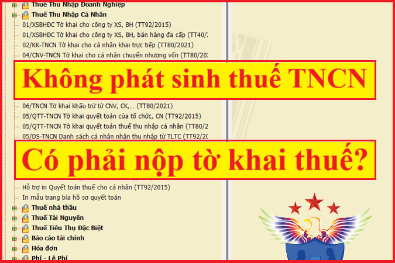

Không phát sinh thuế TNCN có phải nộp tờ khai tháng/Quý không? Không phát sinh lương có phải nộp quyết toán thuế TNCN cuối năm không? Kế toán Diệu Tâm xin trích các văn bản hiện hành quy định về việc đó:
1. Không phát sinh thuế TNCN có phải nộp tờ khai không?
Theo Điều 7 Nghị định 126/2020/NĐ-CP quy định:
"Điều 7. Hồ sơ khai thuế
3. Người nộp thuế không phải nộp hồ sơ khai thuế trong các trường hợp sau đây:"
Kể từ ngày 30/10/2022 theo Điều 1 Nghị định 91/2022/NĐ-CP quy định:
Điều 1. Sửa đổi, bổ sung một số điều của Nghị định số 126/2020/NĐ-CP ngày 19 tháng 10 năm 2020 của Chính phủ quy định chi tiết một số điều của Luật Quản lý thuế
2. Bổ sung điểm e khoản 3 Điều 7 như sau:
“e) Người khai thuế thu nhập cá nhân là tổ chức, cá nhân trả thu nhập thuộc trường hợp khai thuế thu nhập cá nhân theo tháng, quý mà trong tháng quý đó không phát sinh việc khấu trừ thuế thu nhập cá nhân của đối tượng nhận thu nhập.”
Như vậy: Kể từ ngày 30/10/2022 Người nộp thuế không phải nộp hồ sơ khai thuế trong các trường hợp sau đây:
e) Người khai thuế thu nhập cá nhân là tổ chức, cá nhân trả thu nhập thuộc trường hợp khai thuế thu nhập cá nhân theo tháng, quý mà trong tháng quý đó không phát sinh việc khấu trừ thuế thu nhập cá nhân của đối tượng nhận thu nhập
KẾT LUẬN:Quy định về việc kê khai thuế TNCN như sau:
- Nếu tháng/quý nào Không khấu trừ thuế TNCN => Thì tháng/quý đó Không phải nộp tờ khai thuế TNCN.
=> Nghĩa là nếu trong tháng/quý đó không có bất kỳ 1 người lao động nào phải nộp thuế TNCN => Thì Không phải nộp Tờ khai tháng/quý đó.
Chi tiết hơn:
- Tháng/quý nào có người lao động phải nộp thuế TNCN => Thì phải nộp tờ khai thuế TNCN tháng/quý đó.
- Tháng/quý nào Không có bất kỳ 1 người lao động nào phải nộp thuế TNCN => Thì Không phải nộp tờ khai thuế TNCN tháng/quý đó.
|
Căn cứ các quy định nêu trên, chỉ trường hợp tổ chức, cá nhân phát sinh trả thu nhập chịu thuế thu nhập cá nhân mới thuộc diện phải khai thuế thu nhập cá nhân. Do đó, trường hợp tổ chức, cá nhân không phát sinh trả thu nhập chịu thuế thu nhập cá nhân thì không thuộc diện điều chỉnh của Luật thuế Thu nhập cá nhân. Theo đó, tổ chức, cá nhân không phát sinh trả thu nhập chịu thuế thu nhập cá nhân tháng/quý nào thì không phải khai thuế thu nhập cá nhân của tháng/quý đó.
Tổng cục Thuế thông báo để Cục Thuế các tỉnh, thành phố trực thuộc Trung ương được biết./.
Công văn số Số: 2393/TCT-DNNCN của Tổng cục thuế ngày 1/7/2021
|
Ví dụ: Công ty TNHH Tư vấn & Đào tạo Diệu Tâm kê khai thuế Thu nhập cá nhân theo tháng
- Tháng 10/2026, Công ty TNHH Tư vấn & Đào tạo Diệu Tâm có trả lương cho 5 nhân viên + Và trong 5 nhân viên này không có ai phải nộp thuế TNCN => Như vậy Cty Không phải nộp tờ khai thuế TNCN tháng 10/2026 (vì không phát sinh khấu trừ thuế TNCN).
Xem thêm: Hướng dẫn lập Tờ khai thuế TNCN.
Lời khuyên:
- Để xác định xem DN mình kê khai theo tháng hay quý, các bạn có thể xem chi tiết tại đây nhé:
Xem thêm: Hướng dẫn kê khai thuế thu nhập cá nhân.
----------------------------------------------------------------------------------
Giải thích thêm:
Phát sinh khấu trừ thuế TNCN và Phát sinh trả thu nhập chịu thuế TNCN là khác nhau nhé:
- Khấu trừ thuế TNCN: Hiểm nôm na là nếu trong tháng/quý có nhân viên phải nộp thuế TNCN thì DN có trách nhiệm trừ vào thu nhập (lương) trước khi trả lương cho người lao động.
- Trả thu nhập chịu thuế: Hiểu nôm na là trong tháng/quý DN có trả tiền lương cho người lao động (Thu nhập đó là thu nhập chịu thuế TNCN)
----------------------------------------------------------------------------------------
2. Không trả lương có phải nộp Tờ khai Quyết toán năm không?
Căn cứ theo Điều 8 Nghị định 126/2020/NĐ-CP quy định:
d.1) Tổ chức, cá nhân trả thu nhập từ tiền lương, tiền công có trách nhiệm khai quyết toán thuế và quyết toán thay cho các cá nhân có ủy quyền do tổ chức, cá nhân trả thu nhập chi trả, không phân biệt có phát sinh khấu trừ thuế hay không phát sinh khấu trừ thuế. Trường hợp tổ chức, cá nhân không phát sinh trả thu nhập thì không phải khai quyết toán thuế thu nhập cá nhân.
Như vậy:
- Dù có phát sinh hay không phát sinh khấu trừ thuế TNCN thì cuối năm DN vẫn phải nộp Tờ khai quyết toán thuế TNCN.
=> Chỉ trường hợp DN không phát sinh trả thu nhập (Tức là không trả lương cho bất kỳ 1 nhân viên nào): => Thì không phải nộp Tờ khai quyết toán thuế TNCN cuối năm.
Xem thêm: Hướng dẫn lập Tờ khai Quyết toán thuế TNCN.
-------------------------------------------------------------------------
3. Mức phạt chậm nộp tờ khai thuế TNCN
Căn cứ theo Điều 13 Nghị định 125/2020/NĐ-CP quy định xử phạt hành vi vi phạm về thời hạn nộp hồ sơ khai thuế, cụ thể như sau:
1. Phạt cảnh cáo đối với hành vi nộp hồ sơ khai thuế quá thời hạn từ 01 ngày đến 05 ngày và có tình tiết giảm nhẹ.
2. Phạt tiền từ 2.000.000 đồng đến 5.000.000 đồng đối với hành vi nộp hồ sơ khai thuế quá thời hạn từ 01 ngày đến 30 ngày, trừ trường hợp quy định tại khoản 1 Điều này.
3. Phạt tiền từ 5.000.000 đồng đến 8.000.000 đồng đối với hành vi nộp hồ sơ khai thuế quá thời hạn quy định từ 31 ngày đến 60 ngày.
a) Nộp hồ sơ khai thuế quá thời hạn quy định từ 61 ngày đến 90 ngày;
b) Nộp hồ sơ khai thuế quá thời hạn quy định từ 91 ngày trở lên nhưng không phát sinh số thuế phải nộp;
c) Không nộp hồ sơ khai thuế nhưng không phát sinh số thuế phải nộp;
d) Không nộp các phụ lục theo quy định về quản lý thuế đối với doanh nghiệp có giao dịch liên kết kèm theo hồ sơ quyết toán thuế thu nhập doanh nghiệp.
6. Biện pháp khắc phục hậu quả:
a) Buộc nộp đủ số tiền chậm nộp tiền thuế vào ngân sách nhà nước đối với hành vi vi phạm quy định tại các khoản 1, 2, 3 và khoản 4 Điều này trong trường hợp người nộp thuế chậm nộp hồ sơ khai thuế dẫn đến chậm nộp tiền thuế;
(Điểm a này được sửa đổi bởi Điểm b Khoản 10 Điều 1 Nghị định 310/2025/NĐ-CP có hiệu lực từ ngày 16/01/2026)
b) Buộc nộp hồ sơ khai thuế, phụ lục kèm theo hồ sơ khai thuế đối với hành vi quy định tại điểm c, d khoản 4 Điều này.
Xem thêm: Mức phạt chậm nộp tiền thuế TNCN.
---------------------------------------------------------
Các bạn muốn tìm hiểu chuyên sâu hơn về thuế TNCN, cách tính thuế, kê khai thuế TNCN tháng/quý, cách quyết toán thuế TNCN cuối năm … có thể tham gia: Khóa học kế toán thuế thực tế chuyên sâu.
---------------------------------------------------------
